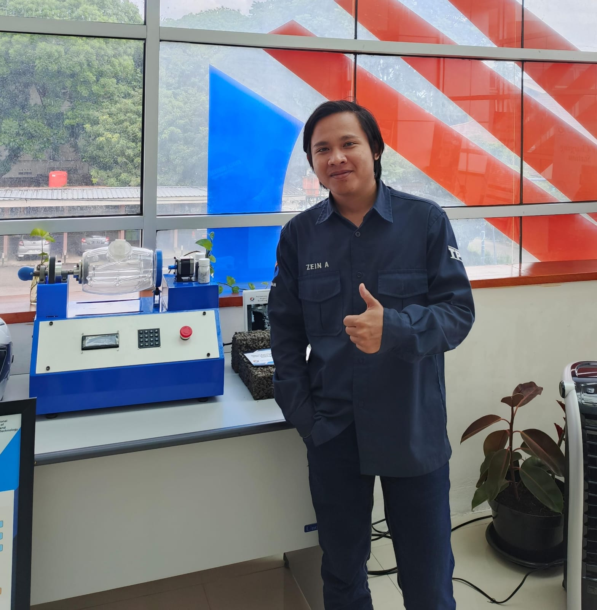
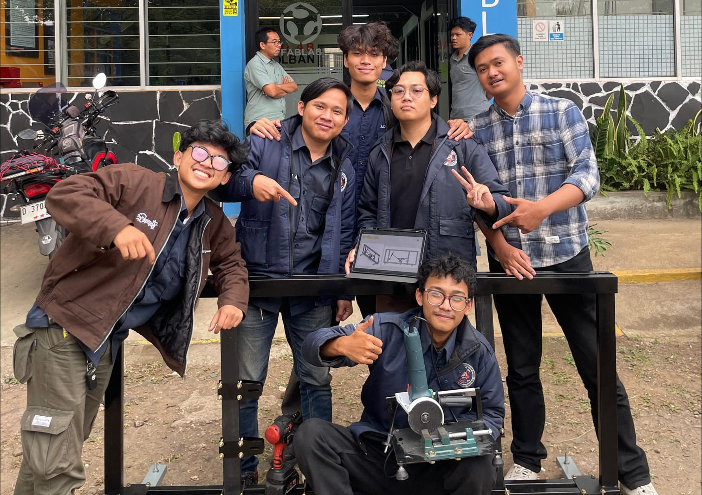
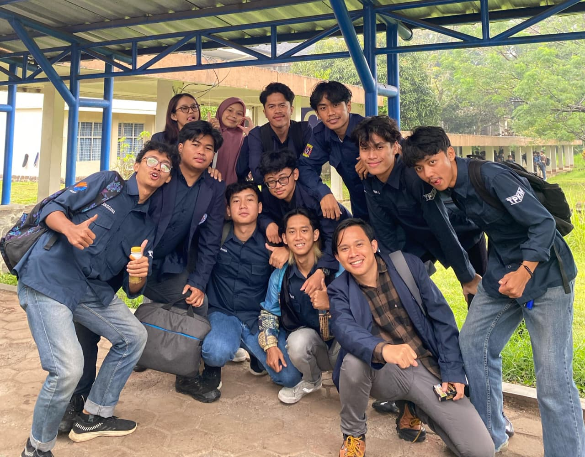
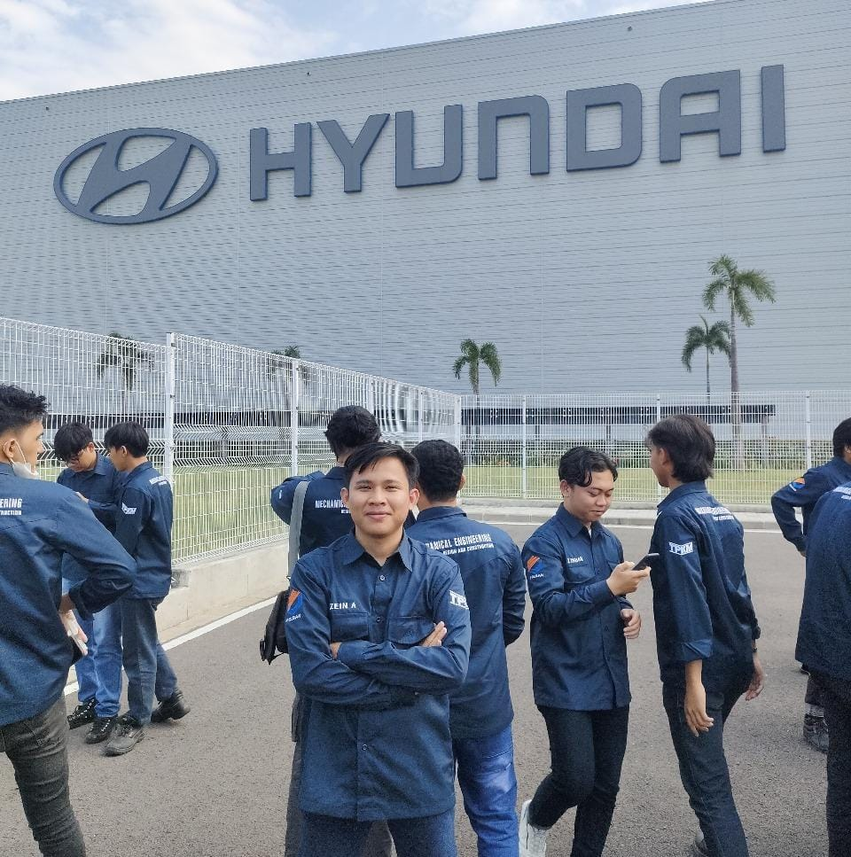
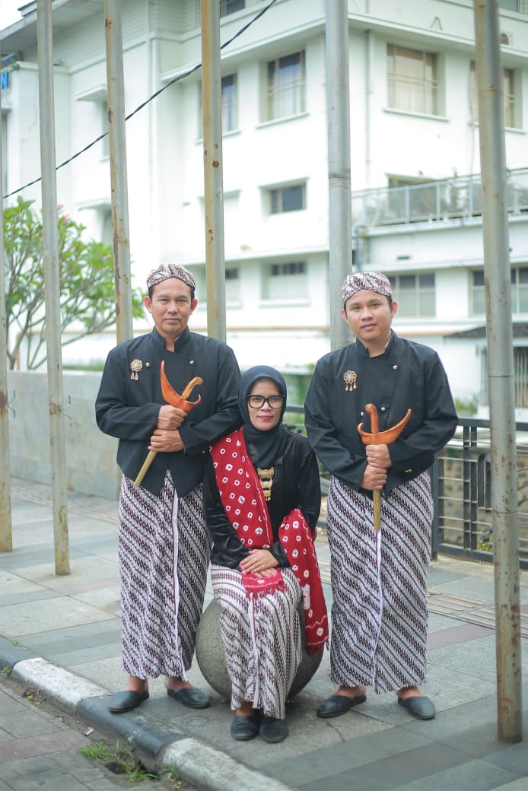
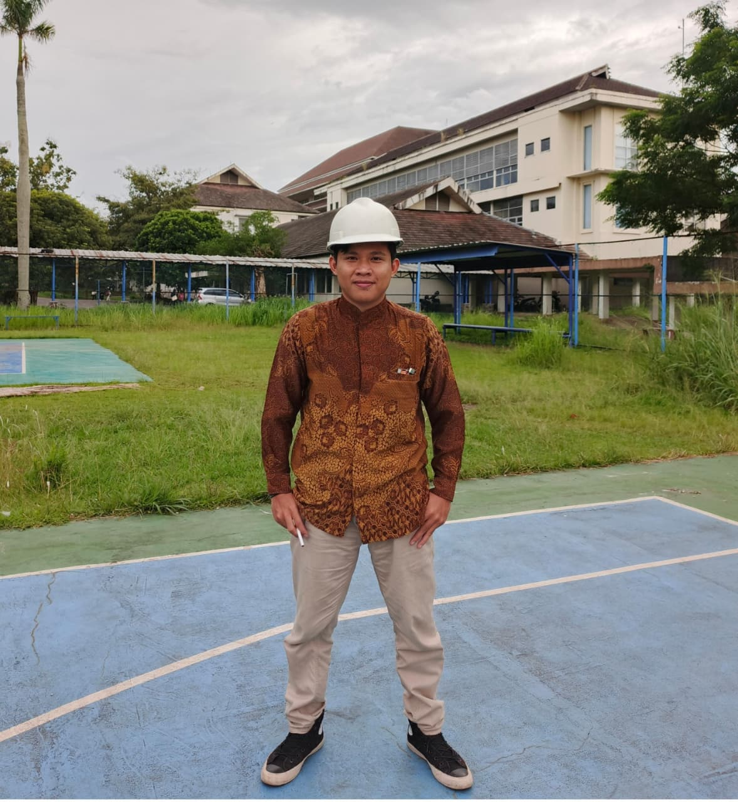

Seorang mahasiswa Teknik Mesin yang punya ambisi mempunyai banyak skill, mulai dari desain mesin sampai hal-hal yang kadang tidak ada hubungannya dengan mesin. Sedang menjalani petualangan di dunia Engineering, ditemani laptop yang kadang ngelag dan mimpi menjadi manusia serba bisa.

Zein adalah seorang NPC yang kadang merasa dirinya MC, padahal quest utamanya saja belum selesai. Hobinya mengumpulkan skill seperti mau menghadapi final boss, mulai dari desain mesin sampai bermain musik. Sekarang masih sibuk grinding level, mencari tujuan hidup, dan berharap suatu saat plot twist berpihak kepadanya.


Zein sadar kalau dirinya bukan MC yang punya plot armor dan jalan hidup penuh kemudahan. Kadang side quest datang bersamaan, EXP terasa lambat naik, dan progress hidup terasa seperti kena debuff. Tapi mau bagaimana lagi, game tetap harus dimainkan. Pelan-pelan menaikan level, belajar dari setiap kekalahan, dan berusaha menjadi versi diri yang lebih baik, meskipun ending-nya masih belum diketahui.


Perjalanan Zein tidak lepas dari dukungan keluarga yang selalu menjadi alasan untuk terus melangkah
Dengan segala hal yang telah dilalui, mulai dari kebahagiaan, kesedihan, kebingungan, hingga kemarahan, Zein tetap melanjutkan perjalanannya. Kadang berlari, kadang berjalan, bahkan sesekali harus merangkak ketika keadaan tidak berpihak kepadanya. Bukan untuk mengalahkan dunia atau membuktikan sesuatu kepada orang lain, melainkan untuk berdamai dengan dirinya sendiri dan menjadi sosok yang selama ini ingin ia capai. Sebab, final boss terbesarnya ternyata bukan dunia, melainkan dirinya sendiri.
